Finally, after running our Kotlin multi-platform library on Android and iOS, we only have to make it work on the Web.
To do so, we will create a simple web page project, to run our Kotlin multi-platform library with JavaScript.
Project Creation Wizard
For the simplicity of this workshop, we will use IntelliJ IDEA Community/Ultimate to create our project.
| The IntelliJ Ultimate Edition have more facilities to create project, so we will see both usage. |
Community Edition |
Ultimate Edition |
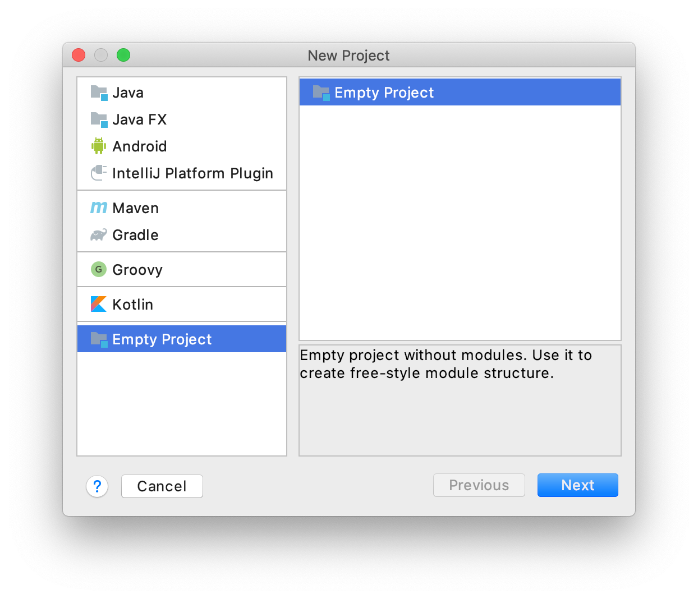 |
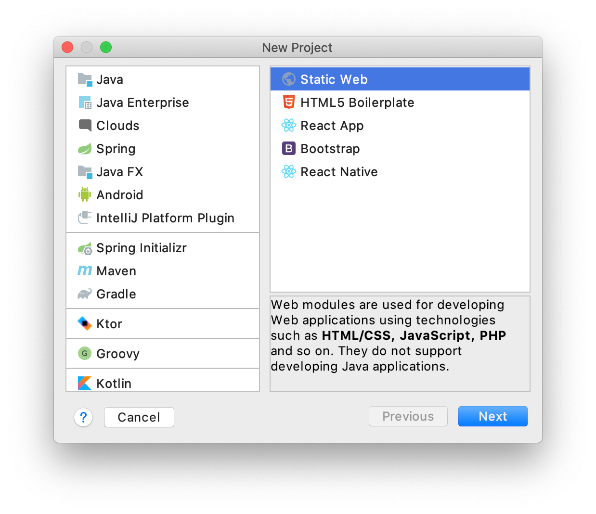 |
Create a new Empty Project |
Create a new Static Web project |
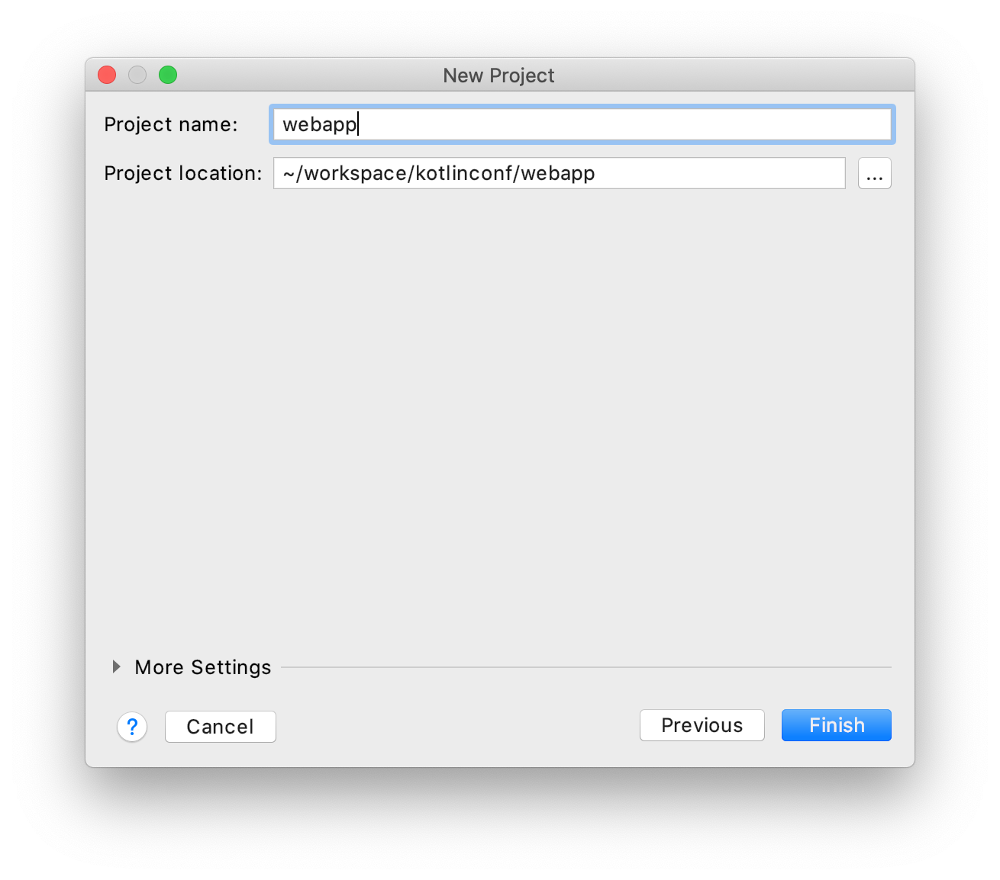 |
Set name and location for your project |
Community Edition |
|
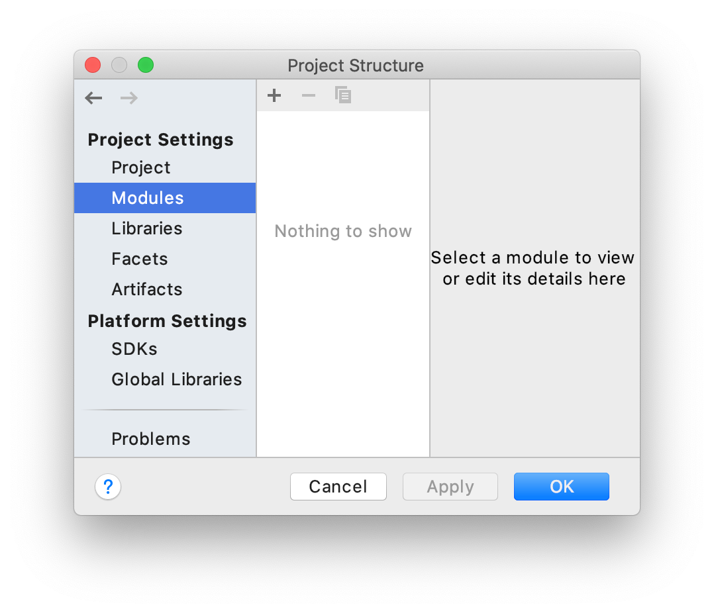 |
Press the OK button to create an empty project |
Then, you will have a shiny project ready to build your web application :).
Community Edition |
Ultimate Edition |
||
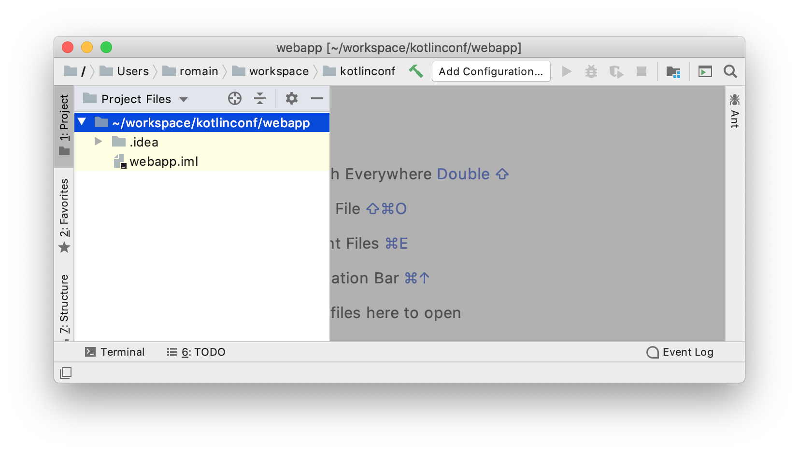 |
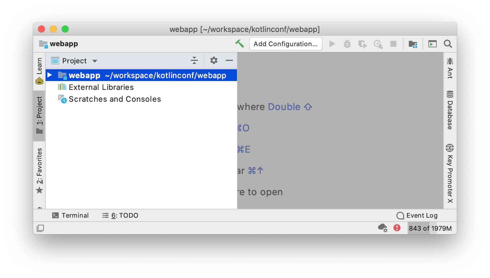 |
||
|
Running a simple web page
Before reaching our goal to use Kotlin multi-platform code with JavaScript, we will build a simple web page and see how to display it into our browser.
To do so, we will create a new HTML file in our project, and add some HTML to it.
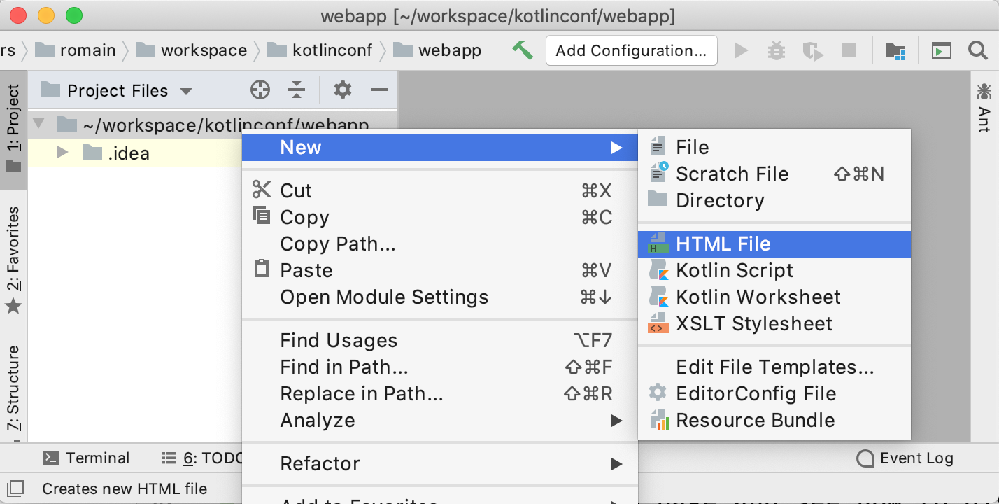 |
Right-click on the project/path, then click on New > HTML File |
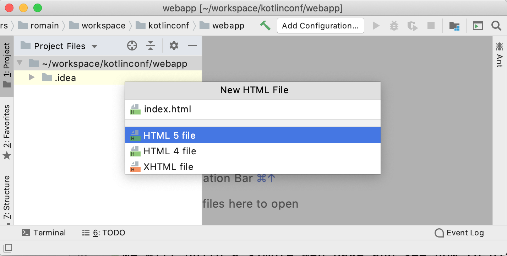 |
Name your file: index.html |
Finally, add the following code to your index.html
<!DOCTYPE html>
<html lang="en">
<head>
<meta charset="UTF-8">
<title>Kotlin MPP with JS</title>
</head>
<body>
<h1 id="kotlin_mpp_message">
Hello multi-platform workshopers!
</h1>
</body>
</html>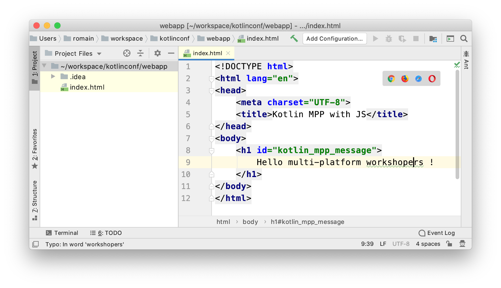 |
Run the page in a browser by clicking on the tooltip bar in the top right corner of the editor |
Now we can see our web page. 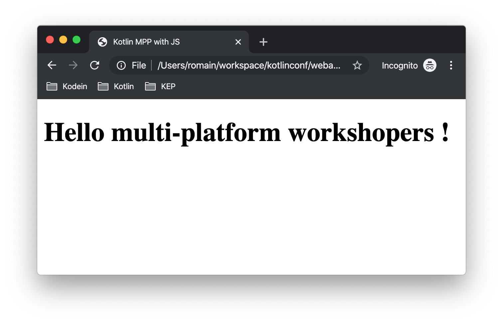
Integrating your Kotlin multi-platform library
Add the JavaScript modules
Remember, in the Kotlin multi-platform library chapter we have built our project to generate binaries for all our targets, including JavaScript.
If you go back to this project, and browse the /build directory you will find a js sub-directory.
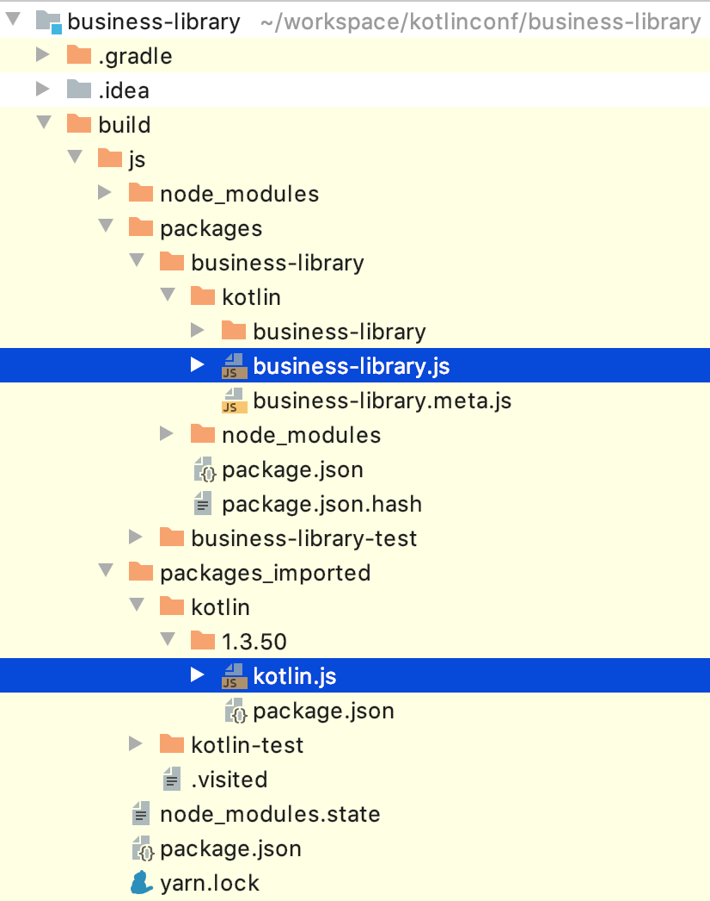 |
The files that will need our attention are
So, we will need to import both modules in our project. |
To import the libraries into our project we can use the command line to copy them, depending on where you have set your projects location.
-
On Linux / MacOS, open a terminal and run the following command.
do not forget to change the path of your projects if needed Create a/librariesdirectory for your web application project.mkdir workspace/kotlinconf/webapp/librariesCopy thekotlin.jsfile, from the/builddirectory of thebusiness-libraryproject to the/librariesdirectory of your web application project.cp workspace/kotlinconf/business-library/build/js/packages_imported/kotlin/1.3.50/kotlin.js workspace/kotlinconf/webapp/librariesCopy thebusiness-library.jsfile.cp workspace/kotlinconf/business-library/build/js/packages/business-library/kotlin/business-library.js workspace/kotlinconf/webapp/libraries -
On Windows, open a terminal and run the following command.
do not forget to change the path of your projects if needed Create a/librariesdirectory for your web application project.mkdir C:\workspace\kotlinconf\webapp\librariesCopy thekotlin.jsfile, from the/builddirectory of thebusiness-libraryproject to the/librariesdirectory of your web application project.copy C:\workspace\kotlinconf\business-library\build\js\packages_imported\kotlin\1.3.50\kotlin.js C:\workspace\kotlinconf\webapp\librariesCopy thebusiness-library.jsfile.copy C:\workspace\kotlinconf\business-library\build\js\packages\business-library\kotlin\business-library.js C:\workspace\kotlinconf\webapp\libraries
You should now see the libraries in your project’s hierarchy:
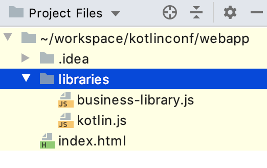
What’s does our module contain?
If you have been curious, you may have opened business-library.js to see what is in it.
(function (root, factory) {
// ...
if (typeof kotlin === 'undefined') { (1)
throw new Error("Error loading module 'business-library'. Its dependency 'kotlin' was not found. Please, check whether 'kotlin' is loaded prior to 'business-library'.");
}
root['business-library'] = factory(typeof this['business-library'] === 'undefined' ? {} : this['business-library'], kotlin); (2)
}(this, function (_, Kotlin) {
'use strict';
var trimIndent = Kotlin.kotlin.text.trimIndent_pdl1vz$;
function sayHelloKotlinConf() { (3)
return trimIndent('\n' + ' Hello KotlinConf, Kotlin/Multiplatform is awesome!' + '\n' + ' We are running on ' + platformName() + '\n' + ' ');
}
function platformName() { (4)
return 'JavaScript';
}
var package$com = _.com || (_.com = {}); (5)
var package$mybusiness = package$com.mybusiness || (package$com.mybusiness = {});
package$mybusiness.sayHelloKotlinConf = sayHelloKotlinConf;
package$mybusiness.platformName = platformName;
Kotlin.defineModule('business-library', _);
return _;
}));| 1 | Checks if the module kotlin.js is present. |
| 2 | Sets the module accessible with this['business-library'] from any JavaScript code. |
| 3 | Our previously created common function sayHelloKotlinConf(). |
| 4 | The JavaScript expect function for platformName(). |
| 5 | Managing packages, thus we will need to call the full qualified name to reach the module members. |
Use your Kotlin multi-platform code
To use our Kotlin multi-platform library in our HTML project we need to reference them. Go to the index.html file and add the following script in the head of the web page.
<!DOCTYPE html>
<html lang="en">
<head>
<!-- ... -->
<script type="text/javascript" src="libraries/kotlin.js`"></script>
<script type="text/javascript" src="libraries/business-library.js"></script>
</head>
<!-- ... -->
</html>
The order of the script references really matters. As the module kotlin.js is referenced in business-library.js, it must be declared first.
|
Your web page should work, but nothing will change. However, to see if there is some ongoing issues you can check the console of the "developer tools" of your browser by clicking on the F12 key on your keyboard.
|
Now, you can change the body of your web page to use the Kotlin multi-platform library.
<body>
<!-- ... -->
<h1 id="kotlin_mpp_message">
Hello multi-platform workshopers !
</h1>
<script type="text/javascript"> (1)
document.getElementById('kotlin_mpp_message').innerText = (2)
this['business-library'].com.mybusiness.sayHelloKotlinConf() (3)
</script>
<!-- ... -->
</body>| 1 | Defining a JavaScript based script. |
| 2 | Accessing the h1, identified by kotlin_mpp_message, to be able to set its inner text. |
| 3 | Calling our sayHelloKotlinConf() function from the module business-library, with its full qualified name. |
Now rerun the page in a browser by clicking on the tooltip bar in the top right corner of the editor , or by reloading the page that you have already opened in your browser.
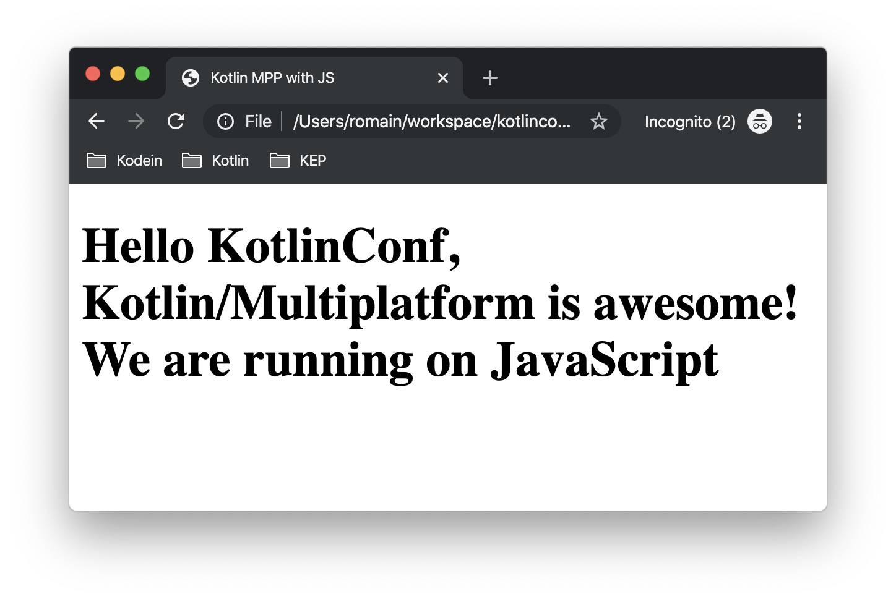
Nice! We can see, displayed on the screen:
-
the common message:
Hello KotlinConf, Kotlin/Multiplatform is awesome! -
the JavaScript specific message:
We are running on JavaScript